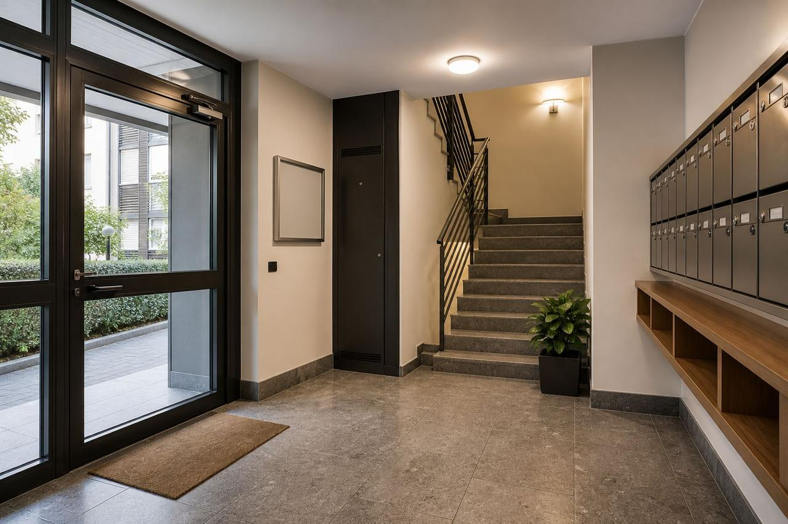
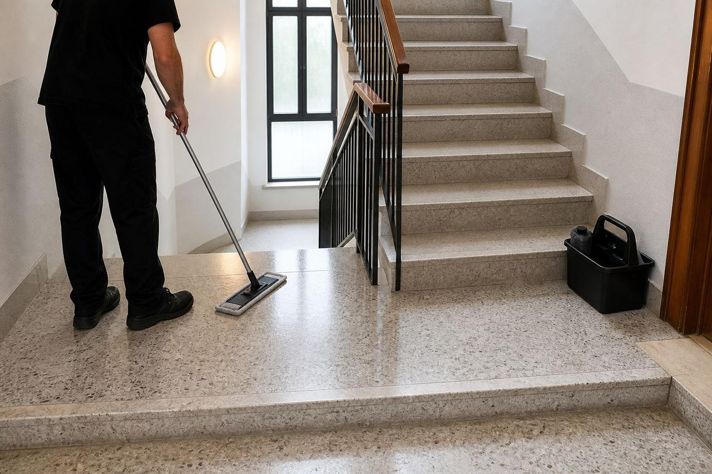
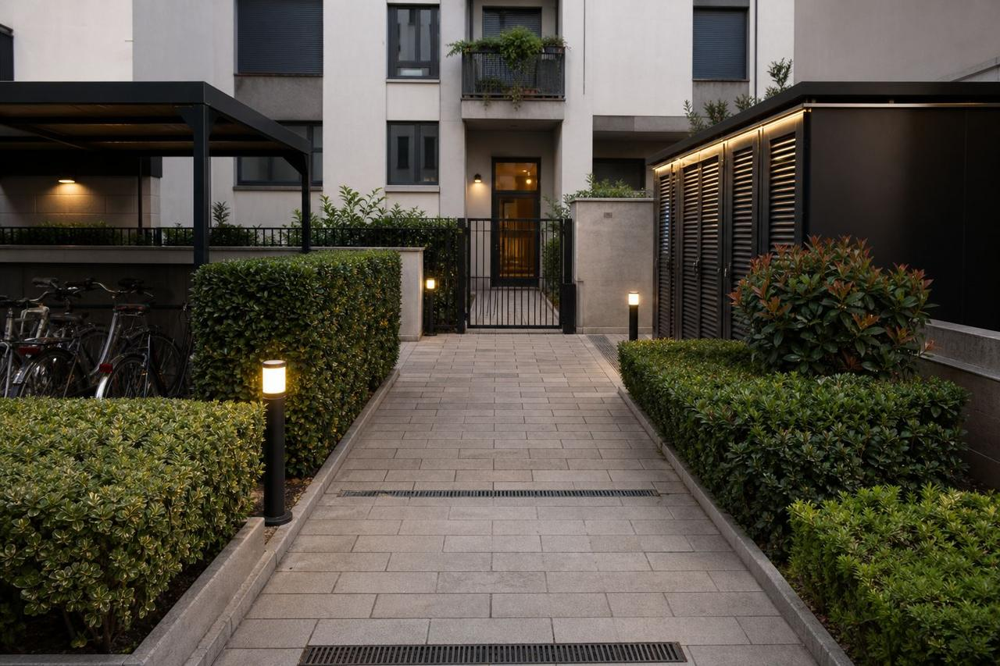
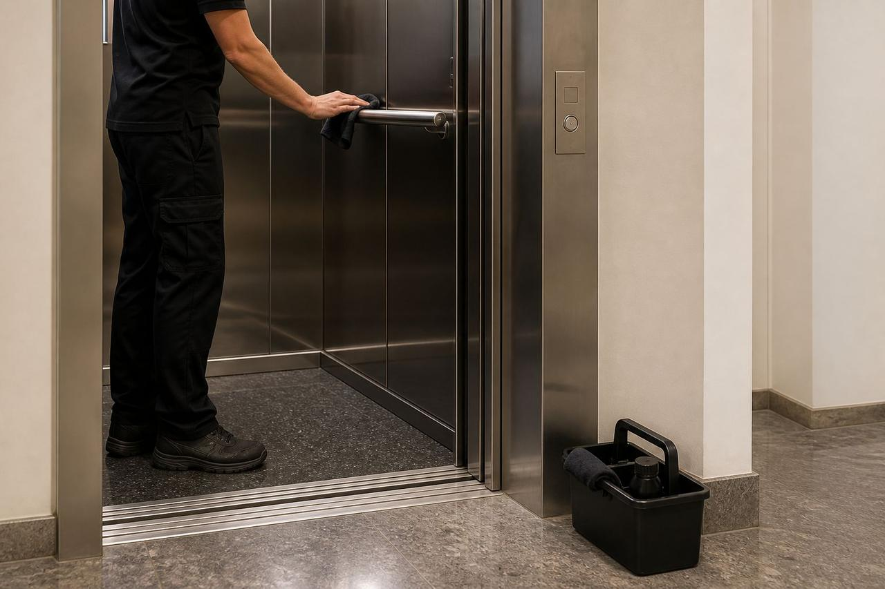
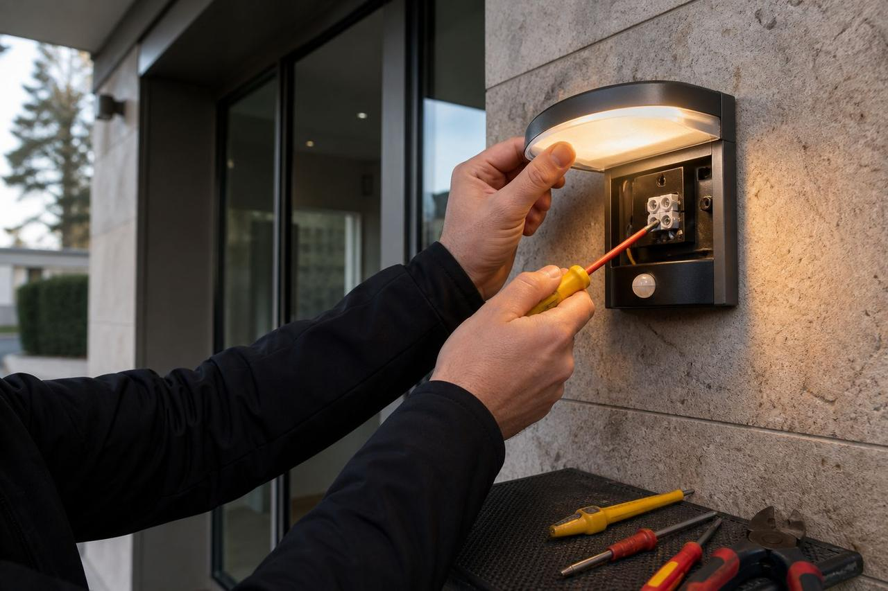
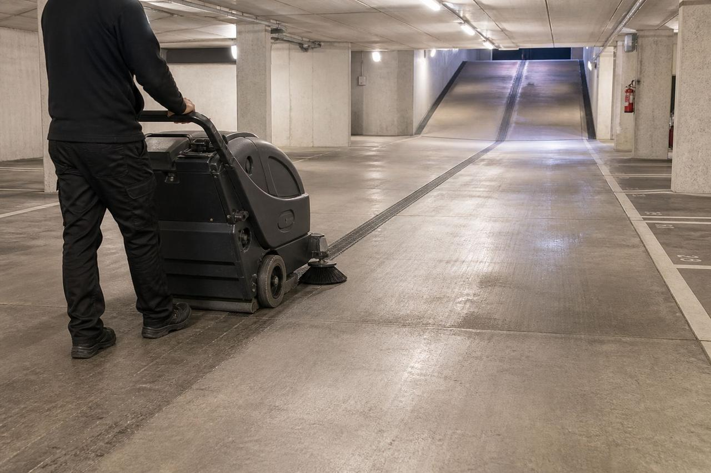
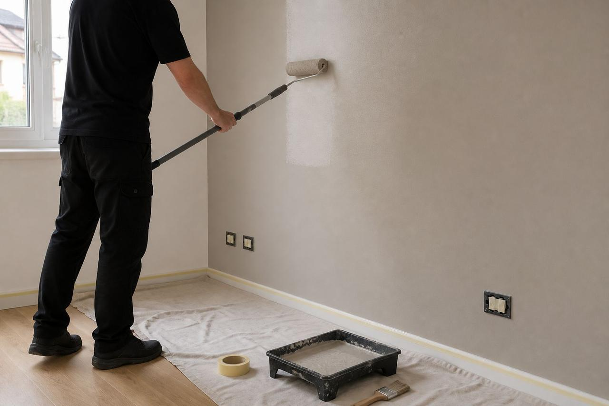
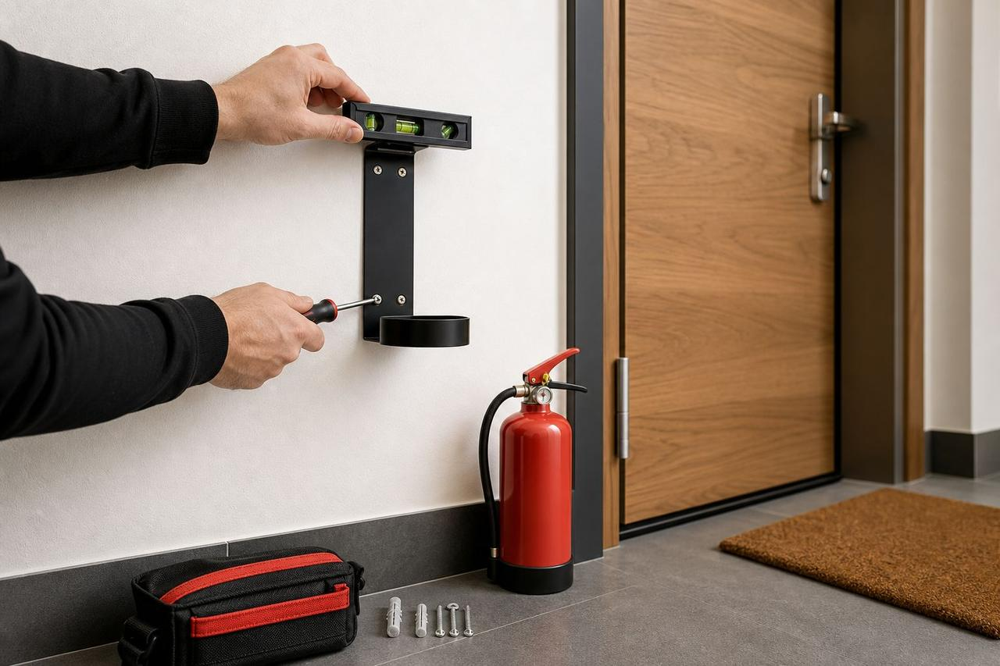
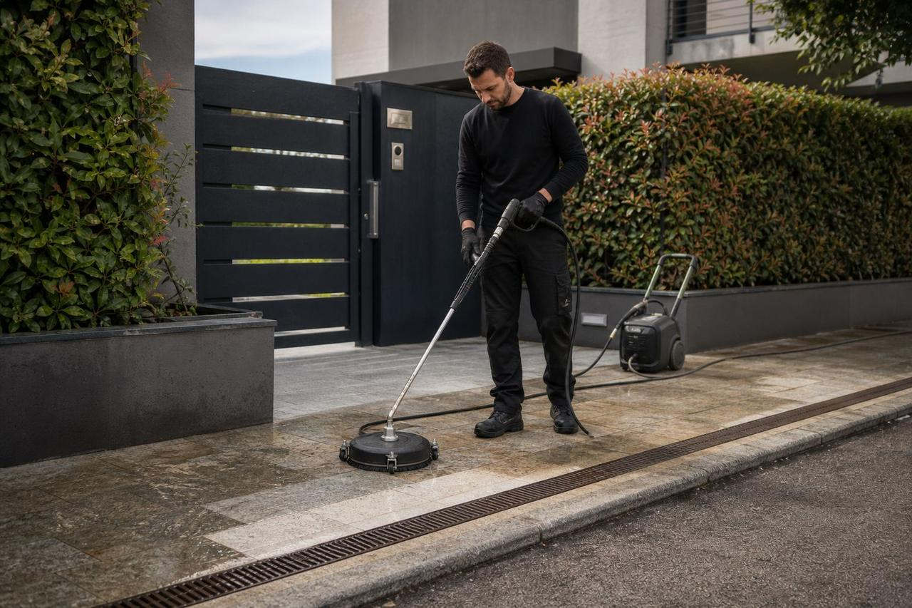

Frequenza e giorni
Concordiamo con l'amministrazione giorni, frequenza e aree. Il giro si ripete sempre uguale, così i residenti sanno quando passiamo.
Passaggi sempre negli stessi giorni, riparazioni fatte al volo, esterni in ordine. E quando qualcosa non va lo sai da noi, con la foto, non in assemblea.
Seguiamo condomini, residence e contesti abitativi condivisi su tutto quello che va fatto nello stabile: parti comuni, piccole riparazioni, esterni, rifiuti. Quello per cui di solito servono l'impresa, il giardiniere e il tuttofare.
Per l'amministratore è un numero, un referente e una fattura, invece di tre fornitori da rincorrere quando i condomini chiedono conto. Lavoriamo tra Bergamo, Brescia, Milano, Val Seriana e Lago di Garda.

Frequenza, giorni e aree li concordiamo con l'amministrazione, e il giro si ripete sempre uguale. I residenti sanno quando passiamo. Tu smetti di essere quello che deve ricordarselo.
Per le urgenze — un vetro rotto, una perdita nel locale tecnico, un cancello che non chiude — ci trovi 7 giorni su 7.
"Il condomino non scrive quando le scale sono a posto. Scrive quando la lampada del pianerottolo è spenta da tre giorni."
— Guasti segnalati con foto, prima che arrivi la mail
Scale, androni, ingressi, ascensori, corridoi e aree comuni: passaggio di pulizia con prodotti adatti agli spazi che tutti attraversano più volte al giorno.
Se troviamo un guasto — una lampada bruciata, un'infiltrazione sul muro delle scale, una porta che non chiude bene — la foto arriva all'amministratore. Prima della mail del condomino del terzo piano.
Lampadine, rubinetti che perdono, maniglie e serrature, aspiratori fermi, silicone da rifare, i piccoli guasti dei locali tecnici: quando possibile li sistemiamo mentre siamo lì, senza aprire una pratica a parte; per gli impianti coordiniamo un tecnico abilitato.
Fuori passiamo l'idropulitrice su vialetti e camminamenti, tagliamo prato e siepi, portiamo via i rifiuti. In assemblea porti una voce sola, non tre preventivi da far approvare.

Siamo una cooperativa: nel tuo stabile entrano squadre organizzate, non volti nuovi ogni mese. Sanno quale portone si blocca, dove sta il contatore, a che ora escono i cassonetti. Ogni passaggio viene verificato prima di andare via, e quello che non va lo segnaliamo con una foto invece di lasciarlo lì per il giro dopo.
Scale, ascensori, autorimesse ed esterni: quello che i condomini attraversano ogni giorno. Immagini illustrative.






Concordiamo con l'amministrazione giorni, frequenza e aree. Il giro si ripete sempre uguale, così i residenti sanno quando passiamo.
Nel canone: pulizia delle parti comuni concordate, bidoni secondo il calendario della raccolta e controllo finale. A parte, sempre scritti nel preventivo: straordinari, esterni non previsti e piccole manutenzioni.
Numero di scale e piani, ascensori, androni e corridoi, autorimesse ed esterni, frequenza dei passaggi e zona. Lo facciamo su misura, dopo un sopralluogo.
Sopralluogo con l'amministratore, proposta scritta da portare in assemblea se serve, accordo su chiavi e accessi. Poi partono i passaggi programmati.
Quello che troviamo (lampade spente, infiltrazioni, porte che non chiudono) lo mandiamo all'amministratore con la foto, il giorno stesso.
Lampadine e piccole riparazioni le facciamo noi quando possibile; per impianti elettrici, idraulici e gas coordiniamo un tecnico abilitato.
Sì: la sera prima del ritiro, seguendo il calendario della raccolta della zona.
Lo decide l'amministrazione: una o più volte a settimana. Giorni e orari restano sempre gli stessi.
Sì: idropulitrice su vialetti e camminamenti, taglio di prato e siepi, rifiuti. Con frequenza da concordare.
Ti mandiamo una proposta scritta con servizi, frequenze e prezzo, pronta da presentare.
Vedi anche: Uffici e studi · Affitti brevi e B&B · Richiedi un preventivo
Dicci quanti stabili, quanti piani e cosa ti fa perdere più tempo oggi. Ti rispondiamo con un preventivo.
Richiedi un preventivo Scrivici su WhatsApp